TidyDensity provides comprehensive parameter estimation capabilities to fit probability distributions to empirical data using multiple statistical methods.
Overview
Parameter estimation allows you to:
- Fit distributions to your empirical data
- Estimate distribution parameters from observed values
- Compare theoretical vs empirical distributions
- Select best-fitting distribution using AIC
- Validate distributional assumptions
Estimation Methods
TidyDensity uses three primary estimation methods:
1. Maximum Likelihood Estimation (MLE)
What it is:
- Finds parameters that maximize the likelihood of observing your data
- Most commonly used method
- Asymptotically efficient
When to use:
- Large sample sizes (n > 30)
- When you need optimal statistical properties
- Default choice for most applications
Characteristics:
- Asymptotically unbiased
- Minimum variance for large samples
- Requires iterative computation
2. Method of Moments Estimation (MME)
What it is:
- Matches sample moments (mean, variance) to theoretical moments
- Often produces same results as MLE for common distributions
- Computationally simpler
When to use:
- Quick approximations needed
- Educational purposes
- When MLE is computationally expensive
Characteristics:
- Easy to compute
- Intuitive interpretation
- May be less efficient than MLE
3. Minimum Variance Unbiased Estimation (MVUE)
What it is:
- Provides unbiased estimates with minimum variance
- Uses correction factors for small samples
- Often same as MLE for large samples
When to use:
- Small sample sizes
- When unbiasedness is critical
- Comparing with MLE
Characteristics:
- Unbiased for any sample size
- Minimum variance among unbiased estimators
- May differ from MLE for small samples
Basic Usage
Simple Parameter Estimation
# Your empirical data
data <- mtcars$mpg
# Estimate normal distribution parameters
result <- util_normal_param_estimate(data, .auto_gen_empirical = TRUE)
# View parameter estimates
result$parameter_tbl
#> # A tibble: 2 × 8
#> dist_type samp_size min max method mu stan_dev shape_ratio
#> <chr> <int> <dbl> <dbl> <chr> <dbl> <dbl> <dbl>
#> 1 Gaussian 32 10.4 33.9 EnvStats_MME_MLE 20.1 5.93 3.39
#> 2 Gaussian 32 10.4 33.9 EnvStats_MVUE 20.1 6.03 3.33Understanding the Output
The function returns a list with several components including parameter estimates from different methods.
Visualizing the Fit
# Plot empirical vs fitted distribution
result$combined_data_tbl |>
tidy_combined_autoplot()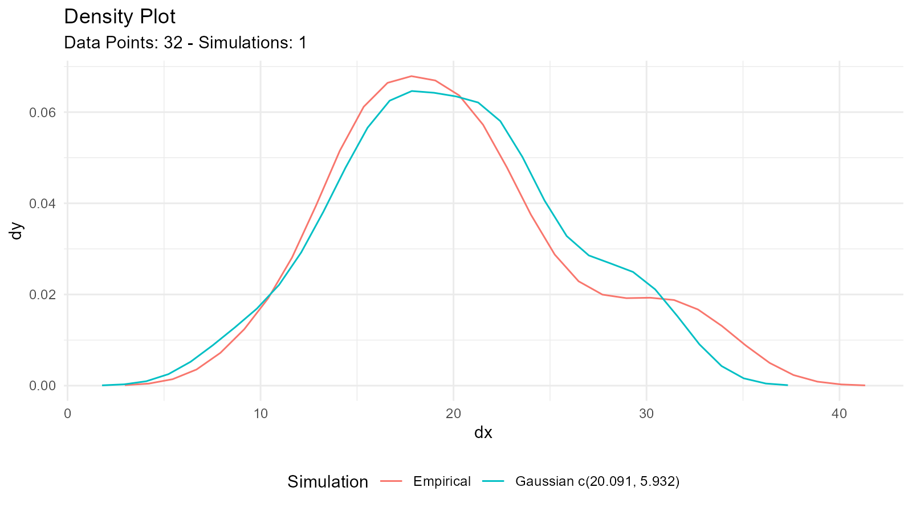
This creates a plot comparing:
- Your empirical data (density plot)
- Fitted distribution from MLE/MME
- Fitted distribution from MVUE
Comparing Methods
Example: Normal Distribution
# Generate some sample data
sample_data <- rnorm(100, mean = 50, sd = 10)
# Estimate parameters
estimates <- util_normal_param_estimate(sample_data)
# View both methods
estimates$parameter_tbl
#> # A tibble: 2 × 8
#> dist_type samp_size min max method mu stan_dev shape_ratio
#> <chr> <int> <dbl> <dbl> <chr> <dbl> <dbl> <dbl>
#> 1 Gaussian 100 26.9 71.9 EnvStats_MME_MLE 50.4 8.67 5.81
#> 2 Gaussian 100 26.9 71.9 EnvStats_MVUE 50.4 8.71 5.78Understanding Differences
For Normal Distribution:
- MLE/MME: Uses sample standard deviation with n-1 denominator
- MVUE: Corrects for bias in small samples
When n is large: MLE and MVUE converge
When n is small: MVUE provides better unbiased estimate
Example: Gamma Distribution
# Generate gamma-distributed data
sample_data <- rgamma(50, shape = 2, rate = 0.5)
# Estimate parameters
estimates <- util_gamma_param_estimate(sample_data, .auto_gen_empirical = TRUE)
# Compare estimates
estimates$parameter_tbl
#> # A tibble: 3 × 10
#> dist_type samp_size min max mean variance method shape scale shape_ratio
#> <chr> <int> <dbl> <dbl> <dbl> <dbl> <chr> <dbl> <dbl> <dbl>
#> 1 Gamma 50 0.306 11.2 3.83 2.50 NIST_M… 2.34 1.64 1.43
#> 2 Gamma 50 0.306 11.2 3.83 2.50 EnvSta… 2.29 1.64 1.40
#> 3 Gamma 50 0.306 11.2 3.83 2.50 EnvSta… 2.21 1.64 1.35
# Visualize fit
estimates$combined_data_tbl |>
tidy_combined_autoplot()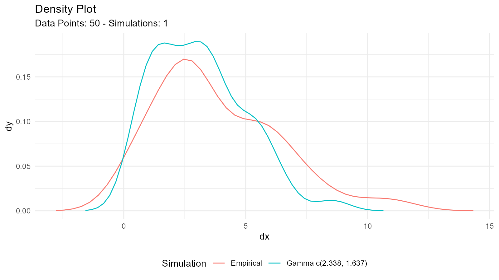
Example: Exponential Distribution
# Generate exponential data
sample_data <- rexp(75, rate = 0.5)
# Estimate rate parameter
estimates <- util_exponential_param_estimate(sample_data, .auto_gen_empirical = TRUE)
estimates$parameter_tbl
#> # A tibble: 1 × 8
#> dist_type samp_size min max mean variance method rate
#> <chr> <int> <dbl> <dbl> <dbl> <dbl> <chr> <dbl>
#> 1 Exponential 75 0.00970 11.2 1.93 4.43 NIST_MME 0.518Model Selection with AIC
What is AIC?
Akaike Information Criterion (AIC) helps compare different distribution models:
- Lower AIC = Better fit
- Balances goodness-of-fit with model complexity
- Used for model selection
AIC Functions
Pattern: util_[distribution]_aic()
# Example data
data <- mtcars$mpg
# Calculate AIC for different distributions
normal_aic <- util_normal_aic(.x = data)
gamma_aic <- util_gamma_aic(.x = data)
lognormal_aic <- util_lognormal_aic(.x = data)
weibull_aic <- util_weibull_aic(.x = data)
# Compare
aic_comparison <- data.frame(
Distribution = c("Normal", "Gamma", "Log-Normal", "Weibull"),
AIC = c(normal_aic, gamma_aic, lognormal_aic, weibull_aic)
)
# Sort by AIC (lower is better)
aic_comparison[order(aic_comparison$AIC), ]
#> Distribution AIC
#> 3 Log-Normal 205.5460
#> 2 Gamma 205.8416
#> 1 Normal 208.7555
#> 4 Weibull 209.2312Visualization of Fitted Distributions
Basic Visualization
# Estimate parameters
data <- rnorm(100, mean = 50, sd = 10)
fit <- util_normal_param_estimate(data, .auto_gen_empirical = TRUE)
# Plot combined (empirical + fitted)
fit$combined_data_tbl |>
tidy_combined_autoplot()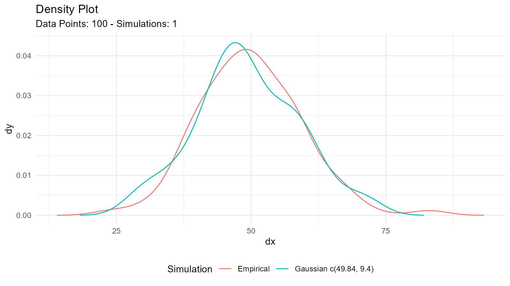
Customizing the Comparison Plot
# Get the plot
p <- fit$combined_data_tbl |>
tidy_combined_autoplot()
# Customize
p +
theme_minimal() +
labs(
title = "Empirical vs Fitted Normal Distribution",
subtitle = "Comparison of MLE/MME and MVUE estimates",
x = "Value",
y = "Density"
)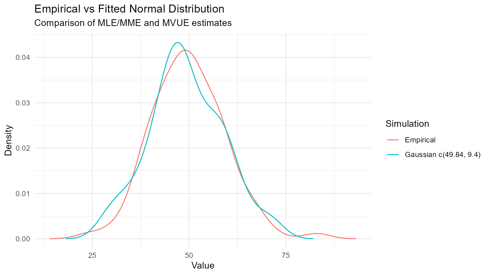
Multiple Distribution Overlay
# Fit multiple distributions
normal_fit <- util_normal_param_estimate(data, .auto_gen_empirical = FALSE)
gamma_fit <- util_gamma_param_estimate(data, .auto_gen_empirical = FALSE)
# Extract parameters and create comparison
n <- length(data)
# Generate fitted distributions
fitted_normal <- tidy_normal(
.n = n,
.mean = normal_fit$parameter_tbl$mu[1],
.sd = normal_fit$parameter_tbl$stan_dev[1]
)
fitted_gamma <- tidy_gamma(
.n = n,
.shape = gamma_fit$parameter_tbl$shape[1],
.scale = gamma_fit$parameter_tbl$scale[1]
)
# Plot separately
tidy_autoplot(fitted_normal, .plot_type = "density")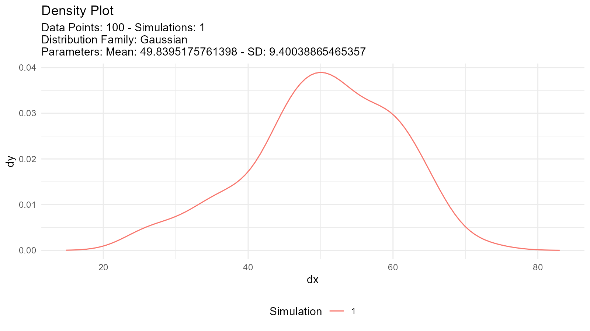
tidy_autoplot(fitted_gamma, .plot_type = "density")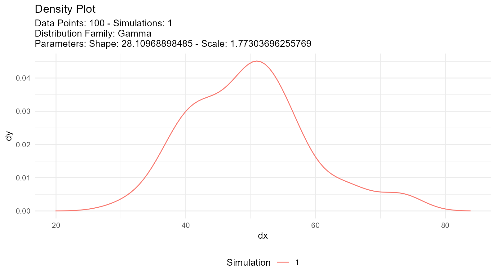
Advanced Techniques
1. Goodness-of-Fit Tests
Validate the fitted distribution:
# Fit distribution
data <- rnorm(100, mean = 50, sd = 10)
fit <- util_normal_param_estimate(data, .auto_gen_empirical = FALSE)
# Extract parameters
estimated_mean <- fit$parameter_tbl$mu[1]
estimated_sd <- fit$parameter_tbl$stan_dev[1]
# Kolmogorov-Smirnov test
ks.test(data, "pnorm", mean = estimated_mean, sd = estimated_sd)
#>
#> Asymptotic one-sample Kolmogorov-Smirnov test
#>
#> data: data
#> D = 0.041874, p-value = 0.9947
#> alternative hypothesis: two-sided
# Shapiro-Wilk test (for normality)
shapiro.test(data)
#>
#> Shapiro-Wilk normality test
#>
#> data: data
#> W = 0.99366, p-value = 0.92432. QQ Plot Validation
# Generate data for QQ plot
theoretical <- tidy_normal(
.n = length(data),
.mean = estimated_mean,
.sd = estimated_sd
)
# Create QQ plot
tidy_autoplot(theoretical, .plot_type = "qq")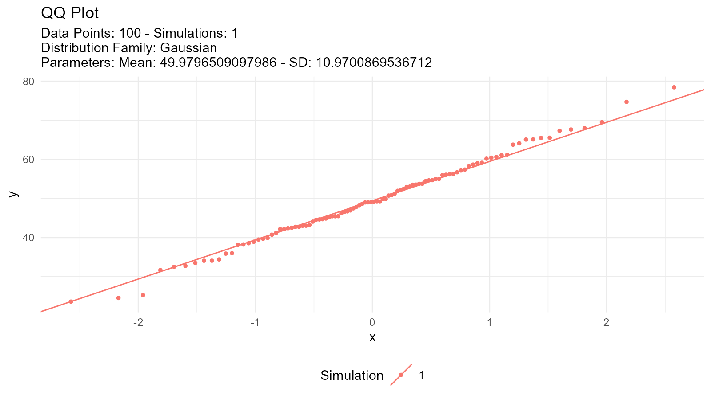
3. Residual Analysis
# Calculate residuals
# For a normal distribution, the expected value for each observation is the fitted mean
empirical <- tidy_empirical(.x = data, .num_sims = 1)
fitted <- tidy_normal(.n = length(data), .mean = estimated_mean, .sd = estimated_sd)
# Compare values
comparison <- data.frame(
observed = data,
expected = fitted$y[1:length(data)],
residual = data - fitted$y[1:length(data)]
)
# Plot residuals
ggplot(comparison, aes(x = expected, y = residual)) +
geom_point() +
geom_hline(yintercept = 0, linetype = "dashed", color = "red") +
labs(title = "Residual Plot", x = "Fitted Values", y = "Residuals")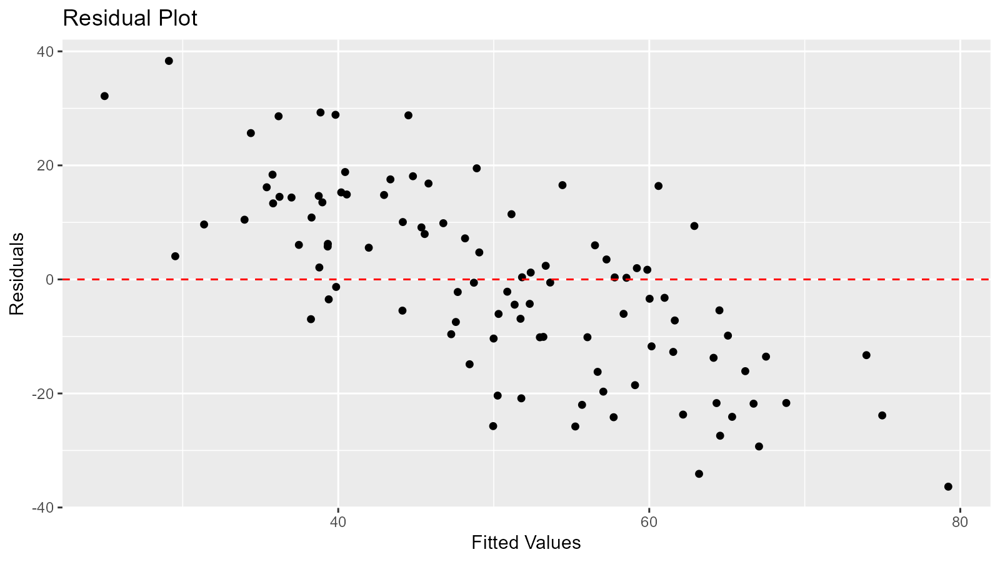
Statistics Tables
Distribution Statistics
Get summary statistics for fitted distributions:
# For normal distribution
util_normal_stats_tbl(tidy_normal()) |>
glimpse()
#> Rows: 1
#> Columns: 17
#> $ tidy_function <chr> "tidy_gaussian"
#> $ function_call <chr> "Gaussian c(0, 1)"
#> $ distribution <chr> "Gaussian"
#> $ distribution_type <chr> "continuous"
#> $ points <dbl> 50
#> $ simulations <dbl> 1
#> $ mean <dbl> 0
#> $ median <dbl> -0.08624274
#> $ mode <dbl> 0
#> $ std_dv <dbl> 1
#> $ coeff_var <dbl> Inf
#> $ skewness <dbl> 0
#> $ kurtosis <dbl> 3
#> $ computed_std_skew <dbl> -0.09419539
#> $ computed_std_kurt <dbl> 2.993398
#> $ ci_lo <dbl> -2.025975
#> $ ci_hi <dbl> 1.917177
# For gamma distribution
util_gamma_stats_tbl(tidy_gamma()) |>
glimpse()
#> Rows: 1
#> Columns: 17
#> $ tidy_function <chr> "tidy_gamma"
#> $ function_call <chr> "Gamma c(1, 0.3)"
#> $ distribution <chr> "Gamma"
#> $ distribution_type <chr> "continuous"
#> $ points <dbl> 50
#> $ simulations <dbl> 1
#> $ mean <dbl> 1
#> $ mode <dbl> 0
#> $ range <chr> "0 to Inf"
#> $ std_dv <dbl> 1
#> $ coeff_var <dbl> 1
#> $ skewness <dbl> 2
#> $ kurtosis <dbl> 9
#> $ computed_std_skew <dbl> 0.9488492
#> $ computed_std_kurt <dbl> 3.56718
#> $ ci_lo <dbl> 0.02308472
#> $ ci_hi <dbl> 0.7102391
# For Poisson distribution
util_poisson_stats_tbl(tidy_poisson()) |>
glimpse()
#> Rows: 1
#> Columns: 17
#> $ tidy_function <chr> "tidy_poisson"
#> $ function_call <chr> "Poisson c(1)"
#> $ distribution <chr> "Poisson"
#> $ distribution_type <chr> "discrete"
#> $ points <dbl> 50
#> $ simulations <dbl> 1
#> $ mean <dbl> 1
#> $ mode <dbl> 1
#> $ range <chr> "0 to Inf"
#> $ std_dv <dbl> 1
#> $ coeff_var <dbl> 1
#> $ skewness <dbl> 1
#> $ kurtosis <dbl> 4
#> $ computed_std_skew <dbl> 0.7359012
#> $ computed_std_kurt <dbl> 3.21436
#> $ ci_lo <dbl> 0
#> $ ci_hi <dbl> 3Output includes:
- Mean
- Variance
- Standard deviation
- Skewness
- Kurtosis
- Mode (when applicable)
- Other distribution-specific statistics
Best Practices
1. Always Visualize
# Don't just look at parameters
fit <- util_normal_param_estimate(data, .auto_gen_empirical = TRUE)
# Always plot the comparison
fit$combined_data_tbl |>
tidy_combined_autoplot()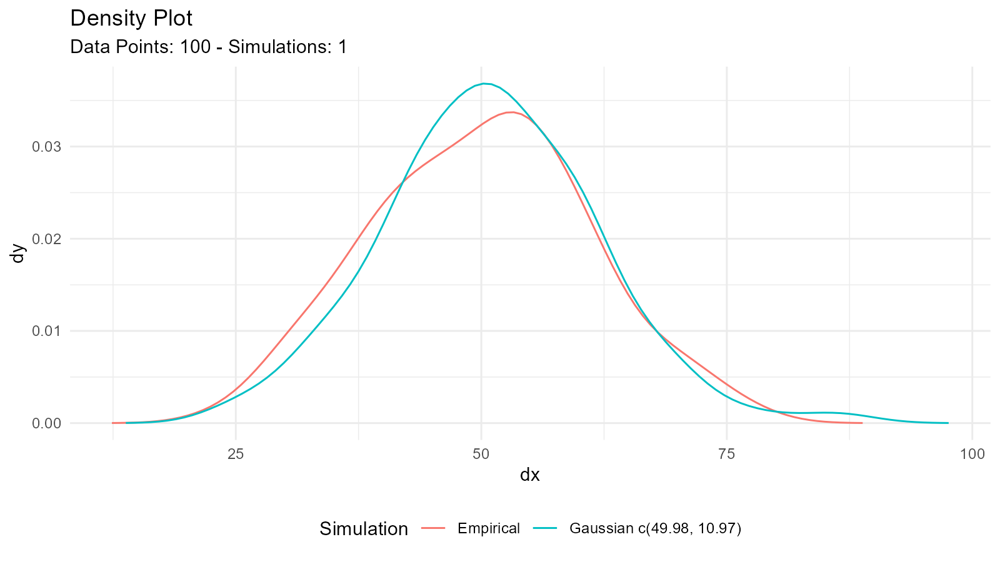
3. Try Multiple Distributions
# Don't assume a distribution
# Try several and compare AIC
distributions <- c("normal", "lognormal", "gamma", "weibull")
aic_values <- numeric(length(distributions))
for (i in seq_along(distributions)) {
aic_func <- get(paste0("util_", distributions[i], "_aic"))
aic_values[i] <- aic_func(.x = data)
}
best_dist <- distributions[which.min(aic_values)]
message("Best fitting distribution: ", best_dist)4. Validate Assumptions
# Check distributional assumptions
# 1. Visual check
fit <- util_normal_param_estimate(data, .auto_gen_empirical = TRUE)
fit$combined_data_tbl |>
tidy_combined_autoplot()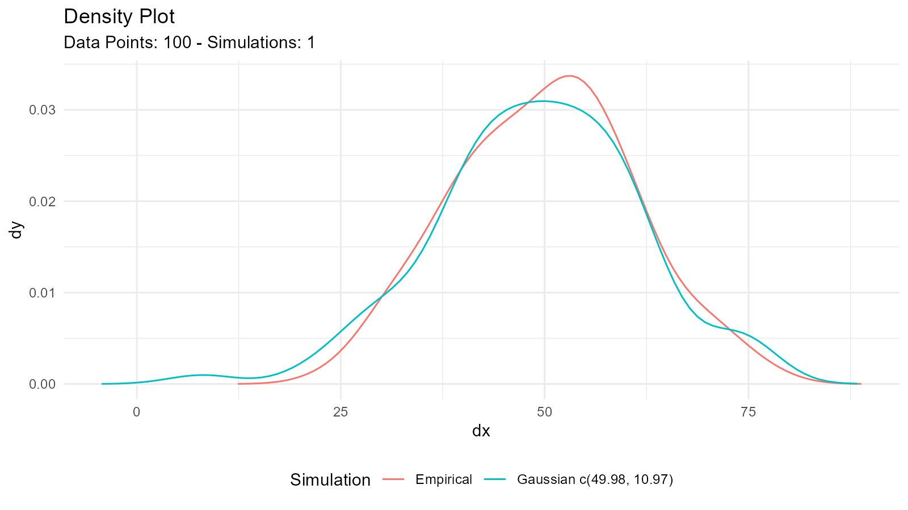
# 2. QQ plot
tidy_normal(.n = length(data), .mean = mean(data), .sd = sd(data)) |>
tidy_autoplot(.plot_type = "qq")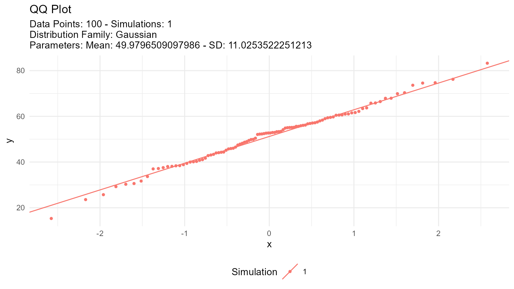
# 3. Statistical test
shapiro.test(data) # For normality
#>
#> Shapiro-Wilk normality test
#>
#> data: data
#> W = 0.99366, p-value = 0.92435. Consider Data Characteristics
For positive continuous data:
- Try: Gamma, Weibull, Log-Normal, Exponential
For bounded data (0 to 1):
- Try: Beta distribution
For count data:
- Try: Poisson, Negative Binomial
For data with heavy tails:
- Try: Cauchy, Pareto, t-distribution
6. Document Your Process
# Good practice: Document your analysis
# Data source and characteristics
data <- mtcars$mpg
summary(data)
#> Min. 1st Qu. Median Mean 3rd Qu. Max.
#> 10.40 15.43 19.20 20.09 22.80 33.90
# Try multiple distributions
normal_aic <- util_normal_aic(.x = data)
lognormal_aic <- util_lognormal_aic(.x = data)
# Select best fit
if (normal_aic < lognormal_aic) {
best_fit <- util_normal_param_estimate(data, .auto_gen_empirical = TRUE)
message("Normal distribution selected (AIC = ", round(normal_aic, 2), ")")
} else {
best_fit <- util_lognormal_param_estimate(data, .auto_gen_empirical = TRUE)
message("Log-normal distribution selected (AIC = ", round(lognormal_aic, 2), ")")
}Common Issues and Solutions
Issue: Parameters Don’t Make Sense
Solution: Check your data for:
- Outliers
- Incorrect data type
- Missing values
- Inappropriate distribution choice
# Data diagnostics
summary(data)
#> Min. 1st Qu. Median Mean 3rd Qu. Max.
#> 10.40 15.43 19.20 20.09 22.80 33.90
hist(data, main = "Histogram of Data", xlab = "Value")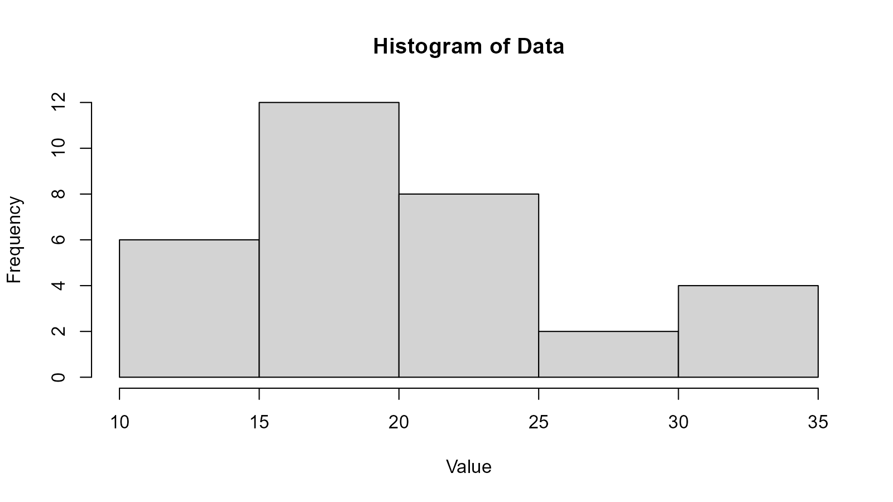
boxplot(data, main = "Boxplot of Data", ylab = "Value")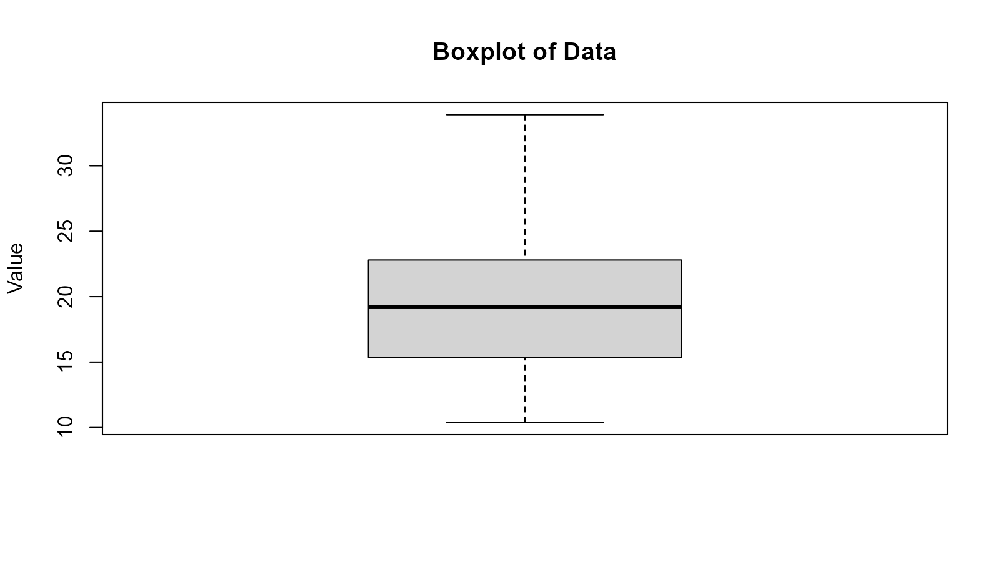
Available Functions
Continuous Distributions
| Distribution | Function |
|---|---|
| Normal | util_normal_param_estimate() |
| Log-Normal | util_lognormal_param_estimate() |
| Exponential | util_exponential_param_estimate() |
| Gamma | util_gamma_param_estimate() |
| Beta | util_beta_param_estimate() |
| Weibull | util_weibull_param_estimate() |
| Pareto | util_pareto_param_estimate() |
| Cauchy | util_cauchy_param_estimate() |
| Logistic | util_logistic_param_estimate() |
| Uniform | util_uniform_param_estimate() |
| Chi-Square | util_chisquare_param_estimate() |
| t-Distribution | util_t_param_estimate() |
Discrete Distributions
| Distribution | Function |
|---|---|
| Bernoulli | util_bernoulli_param_estimate() |
| Binomial | util_binomial_param_estimate() |
| Geometric | util_geometric_param_estimate() |
| Hypergeometric | util_hypergeometric_param_estimate() |
| Negative Binomial | util_negative_binomial_param_estimate() |
| Poisson | util_poisson_param_estimate() |